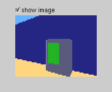
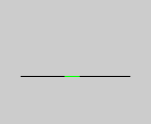

A program
- Megközelítés módok: tanuló, önszervezõ neurális hálózat, evolúciós algoritmus,
osztályozó rendszer
- Elõre felépített, nem tanuló, moduláris architektúra
- Fáradságos finomhangolás
- Braitenberg-szerû modulok egy összehangoló központtal
- Taktilis szenzorok és színes kamera -> képfeldolgozás
- Robot szemmagasságában lévõ képpontok
- Csak az energiaforrás felismerése
- Az egy sor nem tesz lehetõvé összetett navigációt,
útvonaltervezést, kognitív térképet
- Számításigénytõl függõ idõszelet (pislogás) -> reagensebb robot
-


- Mozgásirányító modulok
- Egyenes vonalú haladás, felfedezõ akadálykikerüléssel
- Energiaforráskeresés 360 fokosnak mért fordulatokkal
- Energiaforrásközelítés nemlineáris, szeretetteli módon
- Problémák:
- Pattogó viselkedés
- Térrészben rekedés
- Ötszög felülnézetû energiaforrás megközelítése
- Útban lévõ tárgy
- Falkövetés a fentiek leküzdésére: fix távolság egy faltól elõre
kiválasztott oldalon a taktilis érzékelõkkel, forduláskor is
- Menekülõ modul: tolatás sok fal között